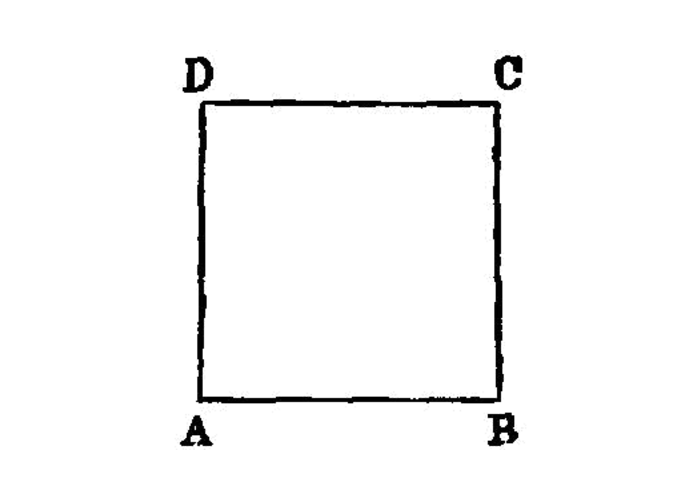

construct a square¶
{kind=link}
On a given straight line to describe a square.
===
Let AB be the given straight line; thus it is required to describe a square on the straight line AB. [^I.46:1]
Let AC be drawn at right angles to the straight line AB from the point A on it [I.11], and let AD be made equal to AB; through the point D let DE be drawn parallel to AB, and through the point B let BE be drawn parallel to AD. [I.31] <pb n=”348”/>
Therefore ADEB is a parallelogram;
therefore AB is equal to DE, and AD to BE. [I.34]
But AB is equal to AD;
therefore the four straight lines BA, AD, DE, EB are equal to one another;
therefore the parallelogram ADEB is equilateral.
I say next that it is also right-angled.
For, since the straight line AD falls upon the parallels AB, DE,
the angles BAD, ADE are equal to two right angles. [I.29]
But the angle BAD is right;
therefore the angle ADE is also right.
And in parallelogrammic areas the opposite sides and angles are equal to one another; [I.34]
therefore each of the opposite angles ABE, BED is also right. Therefore ADEB is right-angled.
And it was also proved equilateral.
Therefore it is a square; and it is described on the straight line AB.
## References
[I.11]: /elem.1.11 “Book 1 - Proposition 11” [I.31]: /elem.1.31 “Book 1 - Proposition 31” [I.34]: /elem.1.34 “Book 1 - Proposition 34” [I.29]: /elem.1.29 “Book 1 - Proposition 29”
## Footnotes
- [^I.46:1]: construct
Proclus (<xref n=”Proc. p. 423, 18” from=”ROOT” to=”DITTO”>p. 423, 18 sqq.</xref>) note the difference between the word <em>construct</em> (<foreign lang=”greek”>συστἡσασθαι</foreign>) applied by Euclid to the construction of a <em>triangle</em> (and, he might have added, of an <em>angle</em>) and the words <em>describe on</em> (<foreign lang=”greek”>ἀναγράφειν ἀπό</foreign>) used of drawing a square on a given straight line as one side. The <em>triangle</em> (or <em>angle</em>) is, so to say, pieced together, while the describing of a square on a given straight line is the making of a figure <quote>from</quote> <em>one</em> side, and corresponds to the multiplication of the number representing the side by itself.